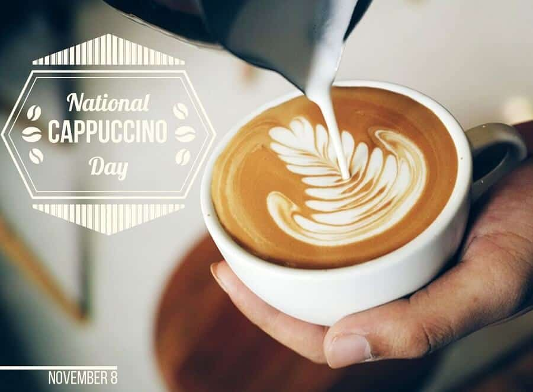
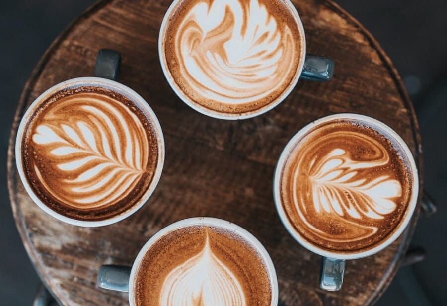

CAPUCHINO LÀ GÌ? MÁCH BẠN CÁCH PHA CAFE CAPPUCCINO NGON TẠI NHÀ

Cà phê Capuchino là gì? Tìm hiểu cafe Capuchino
Cà phê Capuchino là gì?
Cappuccino (/kæpʊˈtʃiːnoʊ), phát âm tiếng Ý: [kapputˈtʃiːno] – đọc như ca-pu-chi-nô. Đây là một cách pha của Ý. Cappuccino là một thức uống bao gồm cafe espresso, sữa nóng với bề mặt được phủ bằng bọt sữa. Cappuccino thường được pha bởi máy pha cà phê Espresso. Cafe espresso được rót vào cốc, sau đó cho một lượng sữa nóng được tạo ra bằng cách đun nóng sữa bằng đũa hơi, trên cùng là lớp bọt sữa.
Tên gọi Cappuccino xuất phát từ các tu sĩ Capuchin, dùng để đề cập đến màu sắc, thói quen của họ. Trong trường hợp này, từ Cappuccino đề cập đến màu sắc của đồ uống.
Lịch sử cà phê Cappuccino
Cappuccino có nguồn gốc từ Kapuziner, một loại đồ uống cà phê trong các quán cà phê của Vienna vào những năm 1700. Cùng xuất hiện với đồ uống có tên Franziskaner, Kapuziner xuất hiện trên thực đơn của nhiều nhà hàng cà phê trên khắp Habsburg Monarchy vào thời điểm này. Tại Ý, người ta thường thưởng thức cà phê Cappuccino vào mỗi sáng để khởi đầu cho ngày mới.
Ở Vương quốc Anh, cà phê Espresso trở nên phổ biến dưới dạng Cappuccino. Do chịu ảnh hưởng của phong tục uống cà phê với sữa của người Anh.
Tại Hoa Kỳ, Cappuccino được phổ biến rộng rãi cùng với Espresso trong các khu phố người Mỹ gốc Ý, như North End của Boston, Little Italy của New York và North Beach của San Francisco. Caffe Reggio của thành phố New York (thành lập năm 1927) tuyên bố đã giới thiệu Cappuccino cho Hoa Kỳ. Trong khi Caffe Trieste của San Francisco tuyên bố đã giới thiệu nó đến bờ biển phía Tây.
Thành phần ly cafe Capuchino
Các loại cafe Capuchino được pha theo chuẩn công thức Ý bao gồm các thành phần cơ bản như: cafe Espresso, sữa và bọt sữa. Ngoài ra, để tăng hương vị cùng sức hấp dẫn cho món đồ uống này, người ta thường sử dụng thêm một ít bột quế hoặc ca cao trên bề mặt tách cà phê.
Lượng sữa cùng bọt sữa trong quá trình pha chế Capuchino được sử dụng với hàm lượng vừa phải. Nhờ sự phối hợp một cách hoàn hảo trong tỉ lệ thành phần, tách cà phê tạo thành mang đến hương vị rất riêng, một chút nhẹ nhàng, trầm lắng đặc trưng.
Ngoài các yếu tố quan trọng nhất trong việc pha chế một tách Cappuccino là kết cấu và nhiệt độ của sữa. Khi Barista làm sữa nóng cho một cốc Cappuccino, bọt sữa được tạo ra bằng cách đưa các bọt khí rất nhỏ vào sữa.
Cách pha Capuchino bằng máy
Nguyên liệu pha cà phê capuchino
- Cà phê được chiết xuất từ máy Espresso: 30ml
- Sữa tươi ít béo, không đường: 100ml
- Đường trắng: 2 muỗng cà phê
- 1 tách sứ có dung tích khoảng 200ml
- Bột ca cao hoặc bột quế
Cần chú ý hơn cả là cà phê Espresso phải được pha từ hạt cà phê nguyên chất nhằm tạo được vị đằm và độ đặc trưng vốn có cho tách cà phê.
Các bước thực hiện
- Bước 1: Sử dụng máy pha cà phê Espresso chuyên dụng để pha một tách cà phê Espresso.
- Bước 2: Tiếp đến là công đoạn tạo bọt sữa. Bạn cần cho sữa và một ít kem sữa vào ca đánh sữa. Sữa được đánh bằng vòi tích hợp kèm máy Espresso. Cần chú ý để ca đánh sữa hướng theo chiều của vòi đánh, nhằm giúp sữa dễ dàng bong lên và tạo bọt tốt hơn, mịn hơn.
- Bước 3: Sau khi tạo bọt sữa thành công, bạn cho sữa vào tách cà phê Espresso. Nên đổ sữa chậm và duy trì tốc độ vừa đủ để dòng sữa có thể chảy đều đặn. Đến khi bọt trắng nổi lên bề mặt cà phê thì dừng để bắt đầu bước tạo hình.
- Bước 4: Lúc này bạn để ca rót sữa gần hơn với tách cà phê, rót nhẹ bọt sữa theo hình dạng mong muốn. Hình nghệ thuật trên tách cà phê Capuchino được tạo ra từ sự tương phản màu sắc của lớp bọt sữa và màu cà phê. Hình dạng này có thể là hình chiếc lá, hình trái tim, hoặc các hình dạng phức tạp khác.
Cách làm Cappuccino ngon tại nhà
Bạn không có thời gian ra các quán cà phê để thưởng thức tách Cappuccino tiêu chuẩn? Bạn hoàn toàn có thể tự pha chế thủ công tại nhà với những bước sau.
- Bước 1: Sử dụng phin để pha chế cà phê thay cho máy Espresso.
- Bước 2: Bắt đầu công đoạn tạo bọt sữa. Cần đun nóng sữa ở nhiệt độ vừa phải khoảng 60 – 70 độ C. Tránh đun sôi vì có thể làm biến đổi chất lượng của sữa.
- Bước 3: Sử dụng dụng cụ đánh sữa bằng tay để tạo bọt sữa. Nên đánh đều tay để bọt sữa bong lên và đạt độ mịn tiêu chuẩn, khi cho vào cà phê có thể nổi lên trên bề mặt.
- Bước 4: Khi bọt sữa hình thành, bạn có thể bắt đầu công đoạn pha sữa vào tách cà phê trước đó và tạo hình.
Ngoài ra, để tăng độ bắt mắt, bạn có thể cho thêm một ít ca cao lên bề mặt tách cà phê thành phẩm.
Lưu ý để pha cà phê Cappuccino ngon
Cà phê Cappuccino là một thức uống cầu kỳ, đòi hỏi sự tỉ mỉ cùng các chú ý đặc biệt trong công đoạn pha chế.
- Công thức pha chế cần có sự cân bằng giữa lượng sữa, bọt sữa và cà phê. Tránh tạo ra sự chênh lệch, khiến tách cà phê thành phẩm mất đi hương vị đặc trưng.
- Tách dùng để thưởng thức cà phê cũng phải được lựa chọn kỹ lưỡng. Chọn tách có thành dày để giữ được lượng nhiệt lâu hơn, có thể là tách bằng sứ.
- Nước pha cafe: Hãy sử dụng nước từ máy lọc để đảm bảo hương vị. Bạn không nên lấy nước giếng, hoặc nước máy. Bởi nước này còn rất nhiều tạp chất, chưa được khử mùi.
- Nên chọn cà phê nguyên chất được rang từ hạt Robusta, Arabica hay mẫu pha trộn giữa 2 loại trên để tạo ra vị khác biệt. Mỗi loại có hương vị khác nhau, tuỳ theo gu vị của người thưởng thức. Tốt nhất bạn nên sử dụng cà phê nguyên hạt, khi pha chỉ xay lượng vừa đủ.
Cách thưởng thức, cách uống cafe Capuchino
Cách uống cafe Capuchino cũng khá cầu kỳ như chính cách pha chế của nó. Cappuccino nên được uống nóng và không khuấy nhằm giữ nguyên hình trang trí phía trên. Lúc thưởng thức, bạn nghiêng tách cafe ở góc phù hợp để có thể uống được cả lớp cà phê ở dưới và lớp bọt sữa phía trên.
Thưởng thức Cappuccino giúp người dùng có tinh thần thư thái. Người ta thường thưởng thức cà phê chậm rãi khi đọc sách, nghe nhạc, trò chuyện
Hy vọng với những thông tin trên, bạn đã có những kinh nghiệm hữu ích, giúp pha chế được một tách cà phê Capuchino thơm ngon. Hãy khởi đầu một ngày mới bằng tách cà phê Cappuccino, chắc chắn bạn sẽ có một ngày làm việc đầy năng lượng.